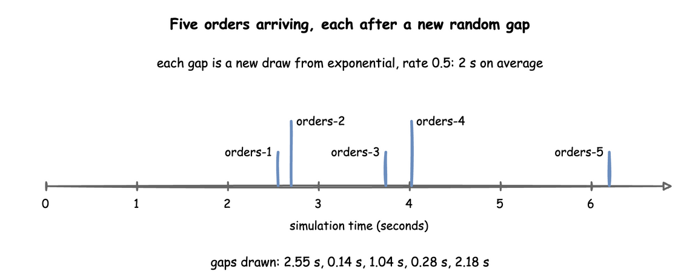
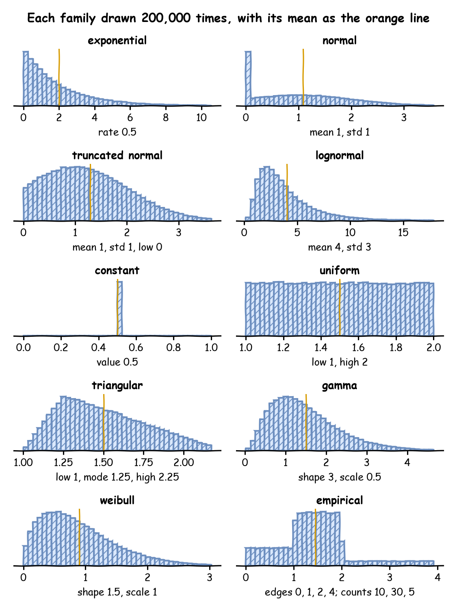
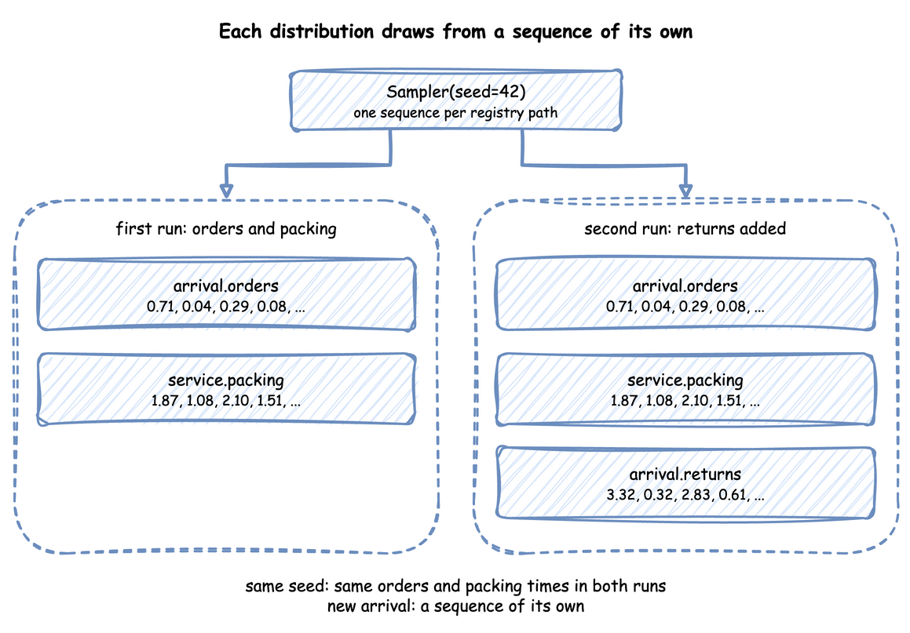

Arrivals and Services: Sampler and the Distributions
Two building blocks set the timing of every simulation. An arrival decides how often a new entity enters the model: an order, a visitor, a support call. A service decides how long a piece of work takes: packing an order, answering a call. Both are distributions of time, and each time one is needed, a value is drawn from the distribution with its current parameters.
What It Is
| Block | Answers | Used by | Example |
|---|---|---|---|
| Arrival | How long until the next entity? | the arrival loop, which starts a task for each one | an order every 2 s on average |
| Service | How long does this piece of work take? | a task, while it holds its resource | 3 s of packing, give or take 0.5 s |
An arrival draws each gap afresh from its distribution, so the gaps differ and entities arrive at uneven times. Look at the first five orders of the shop in First Simulation:

How to Use It
Every distribution is a family, dist, and the parameters that family takes. There are ten families. A parameter outside its range, a missing one, or one the family does not take is refused when the model is built, with the YAML line when it comes from a blueprint. Reference, Distributions lists every family with its parameters, rules, mean and variance. On this page, the table below names each family, the list under it gives each family's rules, and one example shows the form.
| Family | Use it for | Parameters |
|---|---|---|
exponential |
Gaps between arrivals that happen independently of each other: orders, calls, visits. Many short gaps and a few long ones, with mean 1 / rate. |
rate |
normal |
Work with a typical time and a small, symmetric spread. | mean, std |
truncated_normal |
Work with a typical time and a hard minimum. | mean, std, low |
lognormal |
Times that are never negative and now and then much longer: repairs, support calls. | mean, std |
constant |
Fixed times: a conveyor, a set-up, a step that takes no time. | value |
uniform |
Any time in a range, all equally likely, when only the range is known. | low, high |
triangular |
An expert's estimate: the shortest, the most likely and the longest time. | low, mode, high |
gamma |
Times less variable than exponential. A whole-number shape is the Erlang distribution: that many exponential steps in a row. | shape, scale |
weibull |
Time to failure: a shape below 1 fails early, a shape above 1 wears out. | shape, scale |
empirical |
Times taken from real data, when no family fits. | values with weights, or edges with counts |
The rules for each family's parameters:
exponential:rateabove 0, in events per second: 0.5 is one every 2 seconds on average, 2.0 is two a second. It is the one parameter that is not a time, so it takes no duration.normal:mean, andstd0 or more (0 when left out). Astdof 0 gives the mean every time. A draw can be negative, and every time is raised to at least 0.00001 seconds. In a wide normal, these raised draws raise the mean, so usetruncated_normalinstead.truncated_normal:mean,std0 or more, andlow, 0 when left out. Withstd0,meanmust be at leastlow. A draw belowlowis thrown away and drawn again, so no draws pile up at the limit. The mean is therefore the truncated distribution's own: 1.29 seconds formean: 1, std: 1, low: 0. The higherlowis above the mean, the fewer plain draws are kept. So whenlowis more than half a standard deviation above the mean,truncated_normaldraws from an exponential proposal instead (Robert, 1995), which stays exact and fast for anylow.lognormal:meanabove 0 andstd0 or more (0 when left out). Both describe the times you get, not the underlying normal. desflow converts them.constant:value0 or more. It uses no random number at all.uniform:lowandhigh, withlow < high. The mean is halfway between them.triangular:low,modeandhigh, all required, withlow <= mode <= highandlow < high. The mean is (low + mode + high) ÷ 3.gamma:shapeandscale, both above 0. The mean is shape × scale and the variance shape × scale². From a mean and a standard deviation: shape = (mean ÷ std)² and scale = std² ÷ mean, so a mean of 1.5 seconds with a std of 0.5 is shape 9 and scale 0.1667.weibull:shapeandscale, both above 0. The mean is scale × gamma(1 + 1 ÷ shape), where gamma is the gamma function.empirical: eithervalues, each equally likely unless the optionalweightsgive one weight per value; or a histogram ofedgesandcounts, with one count per bin. A histogram draw picks a bin in proportion to its count, then any time inside the bin, all equally likely. Weights and counts are 0 or more and add up to more than 0, and edges increase. The lists are taken when the model is loaded, so anempiricaldistribution has no registry path and does not change while the run goes on.
desflow dist lists the families, and desflow dist <family> prints one family's parameters and rules. With --mean and --std it converts them to the family's parameters, so the gamma above needs no arithmetic:
The last two lines are the service in a blueprint and in the builder. Command Line shows the other conversions.
Three of these families in a blueprint: a labelling time of at least 0.2 seconds, a station that fails more often as it wears, a histogram of measured packing times with three bins, and a scanning time of 0.5 seconds four times in five and 2 seconds otherwise:
An arrival or a service takes the same form for every family: dist, and the parameters in that family's row of the table. An exponential arrival, in the three ways to write it:
| docs/snippets/pages/arrivals_services.py:low-level-exponential | |
|---|---|
An arrival draws its gap from data in the same way. Here a batch arrives 1 second after the last one three times in four, and 5 seconds after it otherwise:
| docs/snippets/yaml/arrivals_services.yaml:weighted-arrival | |
|---|---|
Durations
In a blueprint, every time-valued parameter takes a duration as well as a number of seconds: mean, std, low, mode, high, scale and value, and the values and edges of an empirical. A plain number is seconds. rate stays a number per second.
| docs/snippets/yaml/arrivals_services.yaml:durations | |
|---|---|
The builder and the low-level API take seconds.
Seeding
A seed makes every draw the same on every run:
| docs/snippets/yaml/arrivals_services.yaml:seed | |
|---|---|
desflow run arrivals_services.yaml --seed 7 overrides it without editing the file.
| docs/snippets/pages/arrivals_services.py:low-level-seed | |
|---|---|
In the low-level API you draw yourself, from the current values:
| docs/snippets/pages/arrivals_services.py:low-level-draw | |
|---|---|
A run without a seed draws one and logs it, so it can be repeated: desflow run logs the command with --seed, and a builder run logs the value to pass as random_seed:
A low-level Sampler() with no seed draws nothing at random, as How It Works explains. Randomness and Seeds shows seeds in use.
Replay
An arrival can take its times from recorded rows instead of a distribution. Each row of a CSV or Parquet file, or of a list of dicts, becomes one entity at the row's time. The fields named in fields become the entity's attributes. Here each row of local_replay_orders.csv is an order, at its time in seconds from the start of the run:
| examples/builder/local_replay_example.py:replay | |
|---|---|
add_arrival_replay takes spawn= as add_arrival does, which starts the named task for each row. This example writes an @app.arrival_loop of its own instead, where wait_for_arrival("orders") waits for the next row.
read_trace reads and checks the rows, and returns each with its simulation time, row number and fields.
unit is ms, s, min or h from the start of the run, or timestamp for a date and time, placed on the run's clock from logical_start_time. The rows must be in time order, and the arrival follows these rules:
- Rows at equal times arrive at that time, in the order of the file.
- A row before the start stops the run, and rows at or after
untilnever arrive. - A row without a valid time stops the run, unless
on_invalidisskip, which leaves it out with a warning. - After the last row, the arrival stops and logs one INFO line.
A Parquet file needs the parquet extra. A replayed arrival has no registry path. Local Replay compares a recorded morning with a model of it.
How It Works
One registry of distributions. Every family is declared once, in desflow.core.distributions.DISTRIBUTIONS, with its parameters, its range rules, how to draw from it, its mean and variance, and what it gives with no random generator. The YAML models, the builder, DistributionConfig, the Sampler and the registry's live paths all read it, so they accept the same families and parameters. These are 200,000 draws from each family:

A draw reads the live configuration. A DistributionConfig holds the family and its parameters. Sampler.sample(config) reads the parameters at the moment it is called, so a change made while the run goes on applies from the next draw. A task draws its service time once it has its resource and has published started. The arrival loop draws the next gap when it starts waiting. Every value is raised to at least 0.00001 seconds, so a time is never 0 or negative.
One random stream per distribution. A seeded Sampler makes one generator for each name: NumPy's SeedSequence(seed, spawn_key=(CRC32 of the name,)). When the registry registers a distribution, it names it by its path without the sim id, such as arrival.orders or service.packing, and every draw from that distribution comes from that stream. Probability routing draws from route.<task> in the same way, as Task Flow describes. Each stream depends only on the seed and the distribution's name. Adding a distribution therefore leaves every other one's draws unchanged. The name leaves out the sim id, so renaming the simulation does not change them either:

In the low-level API, a DistributionConfig that was never registered draws from the Sampler's main generator instead. Your own code can take a stream of its own with sampler.generator("<name>"):
Sampler(rng=np.random.default_rng(42)) draws the same numbers as Sampler(seed=42), because the streams come from the generator's seed.
No random generator. A Sampler() with neither a seed nor a generator draws nothing at random: every sample is the distribution's mean, or a constant's value. A run then uses the mean of every input and gives the same output each time, which suits a test. That output is not the model's average result: variation lengthens waits, so a run on mean inputs gives shorter waits than random runs give on average. A truncated_normal gives its mean or its low, whichever is higher.
| docs/snippets/pages/arrivals_services.py:no-generator | |
|---|---|
SimPy and desflow. SimPy has no distributions: a SimPy model draws its own times, usually with random.expovariate(0.5) for a gap of 2 seconds on average, and writes yield env.timeout(...) with the result. Nothing checks the parameters, a negative draw makes timeout raise, and the parameters are ordinary variables. desflow names each distribution and its parameters once, checks them, keeps them in the registry, and gives each a stream of its own. SimPy and desflow compares the two.
Under Live Changes
Each scalar parameter a family takes has a path in the registry: <sim_id>.arrival.<name>.rate for an exponential arrival, <sim_id>.service.<name>.mean and .std for a normal service, .low, .mode and .high for a triangular, .shape and .scale for a gamma or weibull, .value for a constant. A scenario, an ingress message or a process changes it while the run goes on, as Live Parameters explains:
- The next draw uses the new value. An order already being packed keeps the time it drew, and the arrival already being waited for keeps its gap.
- An update is checked on a copy of the configuration, by the same rules as at build. A value outside the range is refused with an error log line, and the old value stays:
| docs/snippets/pages/arrivals_services.py:refused | |
|---|---|
- The family is fixed when the model is built. There is no path that turns a
normalinto anexponential. An update to a parameter the family does not have, such as.rateon a normal, is refused as an unknown path, with a warning. - An
empiricaldistribution has no paths: its lists are taken at load.
Stability and Limits
-
Refused at build. The same checks refuse a bad distribution when the model is built. These three are an out-of-range
std, a parameternormaldoes not take, and amodeabovehigh: -
A wide
normal. Whenstdis half ofmean, 2.3% of draws fall below 0 and are raised to the floor. Whenstdequalsmean, 15.9% are. The raised draws push the average time up: the 200,000 draws of the normal panel in the chart above, with mean 1 and std 1, average 1.08, not 1. Usetruncated_normal. - Rate against mean.
exponentialtakes arateper second, not a mean gap: an order every 30 seconds israte: 0.0333, not30. - A seed and the timestamps. A seed fixes the draws and so the simulation times, but each record's
timestampalso depends on when the run started, unlesslogical_start_timeis set, as Time and Pacing explains. - Spread lengthens queues. Two models with the same mean times but a different spread have different queues: more spread means longer waits, as Queues and Capacity and Choosing Inputs measure.
Example: Local Replay
The local-replay example has one packer and the 40 orders of a recorded morning, which it replays from a CSV file at their times. The last order arrives at 73 seconds. It needs no Docker service and ends on its own after 120 simulation seconds.
Quick Start
desflow examples get downloads the example at the release you install, into a folder of its own. Pick uv or pip:
Quick Start
desflow examples get downloads the example at the release you install, into a folder of its own. Pick uv or pip:
Quick Start
desflow examples get downloads the example at the release you install, into a folder of its own. Pick uv or pip: